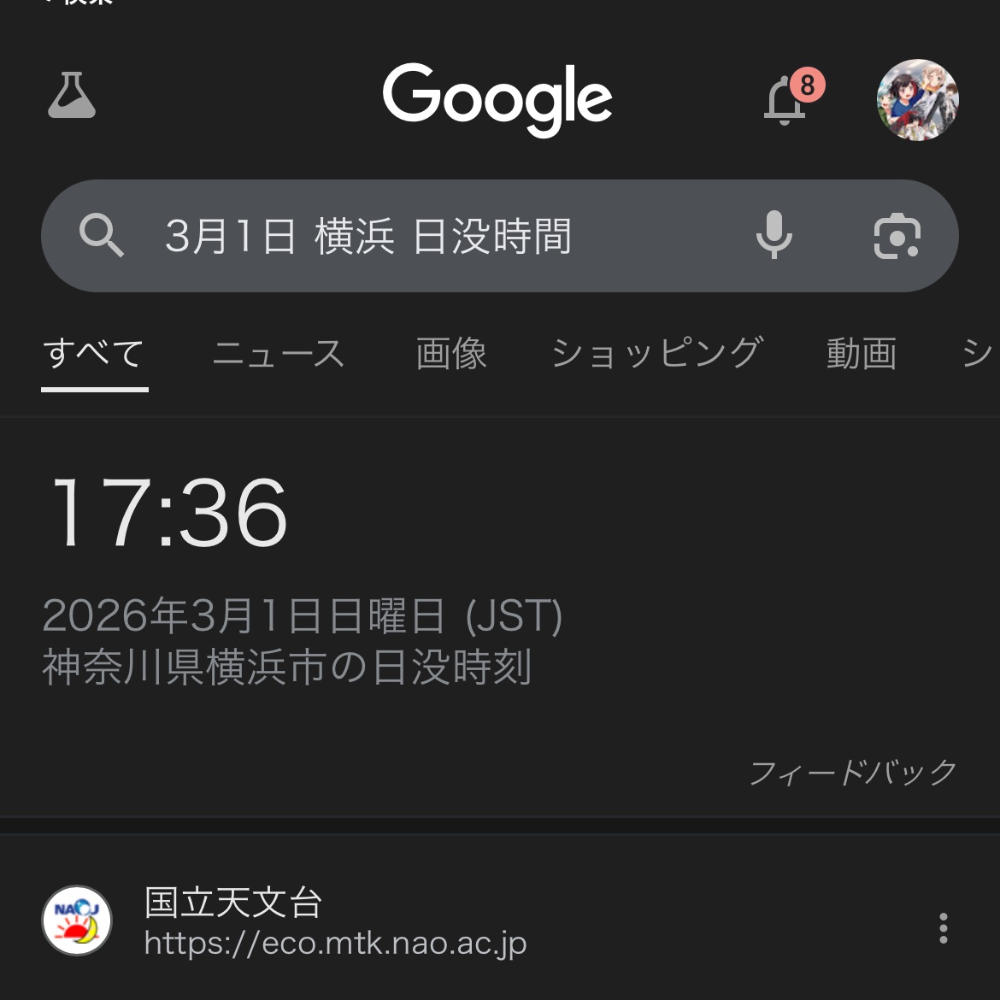

小虚空🍥
@tokerumaisurii
@pudding_well 在下方的推荐推文里看到了一个很有道理的解释

TouRa//513624
@yuushin46625961
気になって検索してみたらビンゴ
開催日、開催場所の日没時間でした
本当にこの一瞬だけの交わりって感じだね
「moment/memory」にピッタリ https://t.co/tMgkSk3rIL https://t.co/Cfbm5SJUp5
布丁井
@pudding_well
17:36 何の意味🧐 https://t.co/lwEJ8YC4m0 https://t.co/VCJylSCrxh